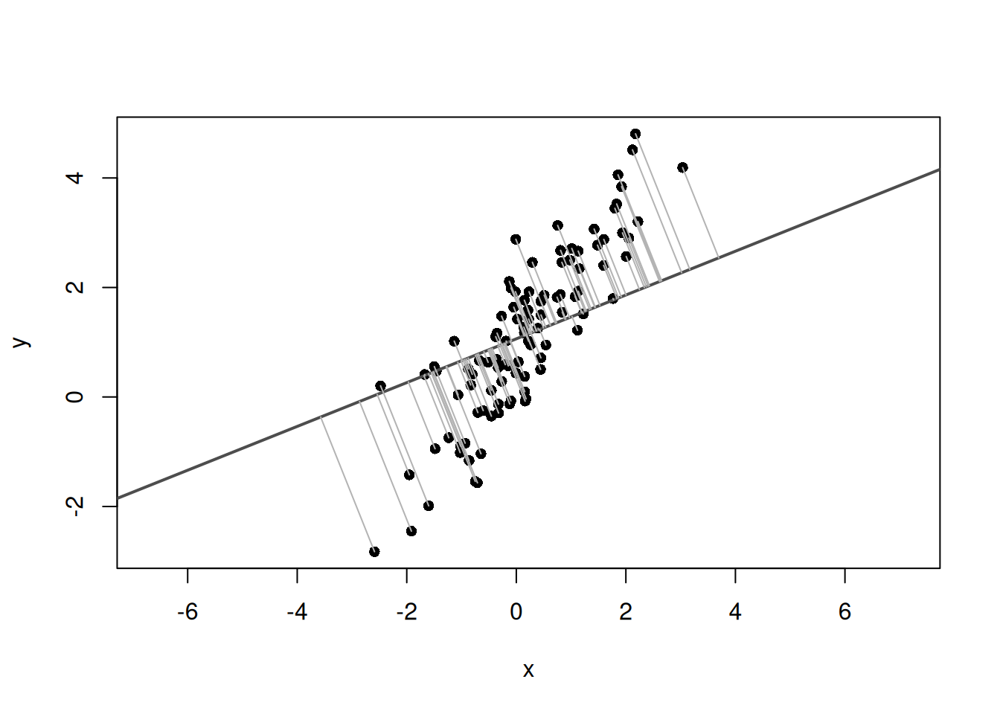

set.seed(123)n<-100beta<-1.5alpha<-1# 主軸方向のスコアt<-rnorm(n, mean =0, sd =2)# 主軸に直交するノイズe<-rnorm(n, mean =0, sd =0.5)# 主軸方向ベクトルと直交方向ベクトルv1<-c(1, beta)/sqrt(1+beta^2)v2<-c(-beta, 1)/sqrt(1+beta^2)x<-t*v1[1]+e*v2[1]y<-alpha+t*v1[2]+e*v2[2]plot(x, y, asp =1, pch =16)
# 第1主軸と第2主軸の傾きmajor_axis_slope<-eigen_vectors[2, 1]/eigen_vectors[1, 1]minor_axis_slope<-eigen_vectors[2, 2]/eigen_vectors[1, 2]# データの中心を通るように切片を計算major_axis_intercept<-mean(y)-major_axis_slope*mean(x)minor_axis_intercept<-mean(y)-minor_axis_slope*mean(x)# データポイントと主要な変動方向をプロットplot(x, y, asp =1, pch =16, main ="Principal Axis Regression")# 第1主軸の線を追加abline( a =major_axis_intercept, b =major_axis_slope, col =2, lwd =3)# 第2主軸の線を追加abline( a =minor_axis_intercept, b =minor_axis_slope, col =4, lwd =3)
# 平均中心化した座標z<-scale(cbind(x, y), center =TRUE, scale =FALSE)plot(x, y, asp =1, pch =16)abline(h =mean(y), v =mean(x), col ="#D55E00", lwd =2, lty =2)# 平均点から各点へのベクトルを描画for(iin1:n){segments(mean(x), mean(y), x[i], y[i], col ="gray70")}
# 平均中心化した座標z<-scale(cbind(x, y), center =TRUE, scale =FALSE)# 平均点mx<-mean(x)my<-mean(y)u<-c(0.8, 0.6)# 方向ベクトル uu<-u/sqrt(sum(u^2))# 念のため単位ベクトルに正規化# 各点の u 方向への射影スカラー s_is<-as.vector(z%*%u)# 射影点：平均点 + s_i uproj_x<-mx+s*u[1]proj_y<-my+s*u[2]# 描画plot(x, y, asp =1, pch =16, type ="n")usr<-par("usr")# 描画範囲# 1刻みのグリッドabline( v =seq(floor(usr[1]), ceiling(usr[2]), by =1), col ="gray70", lty ="dotted")abline( h =seq(floor(usr[3]), ceiling(usr[4]), by =1), col ="gray70", lty ="dotted")# 平均を通る縦横線abline(h =my, v =mx, col ="#D55E00", lwd =2, lty =2)# 方向 u を表す直線if(abs(u[1])<.Machine$double.eps){abline( v =mx, col =adjustcolor("#0072B2", alpha.f =0.5), lwd =3, lty ="dashed")}else{abline( a =my-(u[2]/u[1])*mx, b =u[2]/u[1], col =adjustcolor("#0072B2", alpha.f =0.5), lwd =3, lty ="dashed")}# 各点の平均中心化ベクトル z_ifor(iinseq_along(x)){segments(mx, my, x[i], y[i], col ="gray90")}# 各点から射影点への垂線：u 方向では説明できない残差for(iinseq_along(x)){segments(x[i],y[i],proj_x[i],proj_y[i], col =adjustcolor("#009E73", alpha.f =0.5), lwd =2)}# 平均点から射影点まで：s_i ufor(iinseq_along(x)){segments(mx,my,proj_x[i],proj_y[i], col =adjustcolor("#CC79A7", alpha.f =0.1), lwd =4)}# 元の点points(x, y, pch =16, col =adjustcolor("black", alpha.f =0.5))# 方向ベクトル u の矢印arrows(mx,my,mx+u[1],my+u[2], col ="#0072B2", lwd =4, length =0.2)
set.seed(123)n<-100beta<-1.5alpha<-1t<-rnorm(n, mean =0, sd =2)e<-rnorm(n, mean =0, sd =0.5)v1<-c(1, beta)/sqrt(1+beta^2)v2<-c(-beta, 1)/sqrt(1+beta^2)x<-t*v1[1]+e*v2[1]y<-alpha+t*v1[2]+e*v2[2]plot(x, y, asp =1, pch =16)
# データの中心center<-c(mean(x), mean(y))u0<-c(1, 0.4)# 比較用の方向ベクトルu0<-u0/sqrt(sum(u0^2))# 正規化して単位ベクトルにする# 直線上の射影点を計算する関数get_foot_points<-function(x, y, u, center){X<-cbind(x-center[1], y-center[2])score<-as.vector(X%*%u)# 各点の射影スコアを計算foot_centered<-outer(score, u)# スコアに基づいて射影点を計算foot<-sweep(foot_centered, 2, center, "+")# 中心を足すfoot}# 各点の射影点を計算foot0<-get_foot_points(x, y, u0, center)foot1<-get_foot_points(x, y, u1, center)
データの上に、比較用の直線と各点からその直線への射影点をプロットしてみます。
plot(x, y, asp =1, pch =16, xlab ="x", ylab ="y")abline( a =center[2]-(u0[2]/u0[1])*center[1], b =u0[2]/u0[1], col ="gray30", lwd =2)segments(x, y, foot0[, 1], foot0[, 2], col ="gray70")

次に、ここに第1主軸の線と、各点から第1主軸への射影点を追加してみます。
plot(x, y, asp =1, pch =16, xlab ="x", ylab ="y")# 比較用の方向の線と距離abline( a =center[2]-(u0[2]/u0[1])*center[1], b =u0[2]/u0[1], col ="gray30", lwd =2)segments(x, y, foot0[, 1], foot0[, 2], col ="gray70")# 第1主軸の線と距離abline( a =center[2]-(u1[2]/u1[1])*center[1], b =u1[2]/u1[1], col =2, lwd =3)segments(x, y, foot1[, 1], foot1[, 2], col =3)
u2<-eigen_vectors[, 2]if(u2[1]<0){u2<--u2}plot(x, y, asp =1, pch =16, xlab ="x", ylab ="y")# 第1主軸の線abline( a =center[2]-(u1[2]/u1[1])*center[1], b =u1[2]/u1[1], col =2, lwd =3)# 第2主軸の線abline( a =center[2]-(u2[2]/u2[1])*center[1], b =u2[2]/u2[1], col =4, lwd =3)
第1主軸はデータのばらつきが最も大きい方向を表し、第2主軸はそれに直交する方向を表します。
まとめ
Principal axis regressionは、2変量データの主要な変動方向を直線として捉える方法です。
Warton, David I., Ian J. Wright, Daniel S. Falster, and Mark Westoby. 2006. “Bivariate Line-Fitting Methods for Allometry.”Biological Reviews 81 (2): 259–91. https://doi.org/10.1017/S1464793106007007.